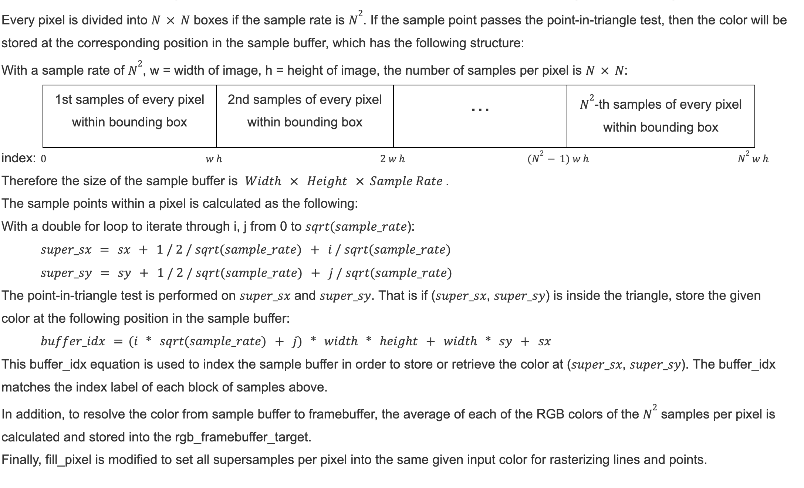

Overview
In project 1, I implemented a rasterizer with different functionalities: triangle drawing, antialising with supersampling, transforms in homogeneous coordinates, barycentric interpolation, and texture mapping.
Section I: Rasterization
Part 1: Rasterizing Single-Color Triangles
Walkthrough of how to rasterize a triangle
First, locate the x and y coordinates of the top left corner and bottom right corner of the bounding box for the triangle. The coordinates of the bounding box can be calculated by finding the minimum and maximum of the x and y coordinates of the triangle, respectively. As shown below:

|
By using the floor function to find minimum x, y and using the ceil function to find maximum x, y ensure that the resulting coordinates are integers and that the boundaries of the triangle are included inside the bounding box, which would allow samples from triangle boundaries to be drawn.
Second, iterate through every integer (x, y) point from (top_left_x, top_left_y) to (bot_right_x, bot_right_y) of the bounding box and a sample point is taken from the center of the pixel: (x + 0.5, y + 0.5).
Third, perform the point-in-triangle test to determine if the sample is inside the triangle. Passing the point-in-triangle test means that the line equations of the 3 edges of the triangle with the sampled point as input result in greater than or equal to zero.
To accommodate for the different winding order of the triangle vertices, for example clockwise or counter-clockwise, the point-in-triangle test is performed on all both winding order of the triangle vertices, which are illustrated as follows:
If the sample point is inside of one of the above triangles, then the point-in-triangle test is passed.
Finally, if the sampled point satisfies the point-in-triangle test, it is rasterized.
Explanation of the Algorithm Runtime
The algorithm checks each sample within the bounding box of the triangle. The coordinates of the top left corner and the bottom right corner of the bounding box are found by finding the minimum and maximum of x and y coordinates respectively. After that, 2 for loops are implemented to iterate every sample from the top left corner to the bottom right corner of the bounding box to check if the sample is within the triangle and rasterize the point if it is. The runtime is linear in terms of the number of integer points inside the bounding box of each triangle in the image.

|

|

|

|
Aliasing has occurred so that the edges of the triangles are uneven; has staircase-like edges.
Part 2: Antialiasing Triangles by Supersampling
Supersampling algorithm and data structures. Why is supersampling useful? What modifications did you make to the rasterization pipeline in the process? Explain how you used supersampling to antialias your triangles.
To implement supersampling, points at sqrt(sample_rate) * sqrt(sample_rate) grid locations within a single pixel area are sampled. We then perform the point-in-triangle test for each of the sample points inside a pixel within the bounding box of the triangle.
|  |
Supersampling is useful because it removes anti-aliasing by rasterizing an image to a higher resolution, taking the average of multiple color samples within a pixel, and downsampling to the output resolution of the frame buffer.
Rasterization pipeline is modified to enable supersampling:
- set_framebuffer_target and set_sample_rate are modified to have the sample buffer resize to width*height*sample_rate instead of width*height
- Instead of calling fill_pixel to color the pixel in rasterize_triangle function, the color of each of the sqrt(sample_rate)*sqrt(sample_rate) sample points are stored into a sample buffer.
- Instead of directly taking a single color for a pixel, resolve_to_framebuffer is modified to compute the average of the sqrt(sample_rate)*sqrt(sample_rate) sample points and use the average to obtain its R, G, B values, which is then stored as the frame buffer pixel data.
To antialias the triangle, supersampling uses the average of the colors of sqrt(sample_rate) * sqrt(sample_rate) sample points within a pixel instead of the center color of the pixel to compute the framebuffer pixel R, G, B values. Therefore, instead of having two distinct colors, for example, pure red or pure white, supersampling and averaging allows a pixel in frame buffer to have a color in between the two distinct colors, for example, with a brightness between pure red and pure white. This effect is especially observed on the boundaries of a triangle, where the pixels are either one of the two distinct colors without supersampling. By having some in-between colors, the triangles no longer have obvious staircases or jaggies on their edges. Therefore, the triangles are antialiased.

|
|
|
|

|
As the sampling rate increases, the edge of the skinny triangle corner becomes more smooth. Instead of having either a color or no color in each pixel as in the image with sample rate 1, where the edge of the triangle is actually disconnected, the images with higher sample rates have varied brightness in their pixels, as a result of taking an average of the sampled points in each pixel.
Part 3: Transforms
Create an updated version of svg/transforms/robot.svg with cubeman doing something more interesting, like waving or running. Feel free to change his colors or proportions to suit your creativity. Save your svg file as my_robot.svg in your docs/ directory and show a png screenshot of your rendered drawing in your write-up. Explain what you were trying to do with cubeman in words.
To create cubeman, the three transformation functions are implemented in the homogeneous coordinates: translate, scale, and rotate. The matrices to compute each of these three transformations are shown below:
|
|

|
To create a running cubeman, the translate and rotate functions are used in my_robot.svg. After filling the polygons with color and scaling them to represent legs and arms, the polygons are rotated and translated. The rotation and translation are adjusted little by little so that the cubeman looks like it is running. More specifically, I first identify whether the colored and scaled rectangles should be rotated clockwise or counterclockwise and by how much they should rotate. After setting the rotation, I use translation to move the different body parts to where they belong in a cubeman running pose.
Section II: Sampling
Part 4: Barycentric coordinates
Explain barycentric coordinates in your own words and use an image to aid you in your explanation. One idea is to use a svg file that plots a single triangle with one red, one green, and one blue vertex, which should produce a smoothly blended color triangle.
Barycentric coordinates indicate the location of a point inside a triangle based on the relationship from each of the triangle vertices to that particular point.
|
|

|
Image 13 above is a triangle with one red, one green, and one blue vertex, created by modifying the svg file to indicate the coordinates of triangle vertices and color at each vertex. The color inside the triangle is blended together based on the three vertex colors because each pixel color is calculated using the barycentric coordinates and the three vertex colors.
Part 5: "Pixel sampling" for texture mapping
Explain pixel sampling in your own words and describe how you implemented it to perform texture mapping. Briefly discuss the two different pixel sampling methods, nearest and bilinear.
Pixel sampling is obtaining the texture image pixel color for the screen sampled position given the texture and the coordinates of the sample point. To perform texture mapping, for each rasterized screen sample (x, y), obtain the texture image pixel by performing the following operation:

Call nearest_sampling or bilinear_sampling with Vector2D(u, v) as argument depending on the value of psm.
If performing nearest neighbor sampling, round the sample texture coordinate values, multiply the u coordinate value by width, and multiply the v coordinate value by height, which are used to index the mipmap.
If performing bilinear sampling:
-
a linear interpolation function is implemented to abstract away the lerp calculations.
-
First, locate the coordinates of the 4 closest texture sample points using floor and ceil functions, labeled in the following diagram. The yellow point is the sample point and the four gray points are the 4 nearest pixel centers.

-
Calculate the fractional offset (s, t) from the bottom left coordinates. Third, use the lerp function to interpolate horizontally and vertically as follows:
-
Bilinear sampling computes a weighted average of the four closest pixel centers to the sample point using the lerp (linear interpolation) function.
Now we are able to rasterize the svg files with texture maps after implementing pixel sampling
|
|
|
|
|
|
Use the pixel inspector to find a good example of where bilinear sampling clearly defeats nearest sampling. Show and compare four png screenshots using nearest sampling at 1 sample per pixel, nearest sampling at 16 samples per pixel, bilinear sampling at 1 sample per pixel, and bilinear sampling at 16 samples per pixel.
|
|
|
|
|

|
In the image with nearest sampling at 1 sample per pixel, there is obvious aliasing and no smooth transition between one pixel color and another. In comparison, the image with bilinear sampling at 1 sample per pixel has less distinct blocks of pixel colors and less aliases; it is showing more smooth transitions from one color to another. Bilinear sampled image with 1 sample per pixel looks more similar to the nearest sampled image at a higher sample rate – 4 samples per pixel or 9 samples per pixel. The image with bilinear sampling at 16 samples per pixel and the one with nearest sampling at 16 samples per pixel look similar to each other. Overall, bilinear sampling performs better than nearest sampling, especially in image areas where pixel colors change frequently.
Comment on the relative differences. Discuss when there will be a large difference between the two methods and why.
In nearest sampling, the color/texture value of a sample point in the sqrt(sample_rate) * sqrt(sample_rate) pixel grid is determined by the color/texture value of the nearest pixel center. Therefore, the results can appear blocky. Whereas in bilinear sampling, the color value of a sample point in the sqrt(sample_rate) * sqrt(sample_rate) pixel grid is determined by the weighted average of the 4 nearest pixel centers. The closer the sample point to a pixel center, the greater the influence that pixel center has on the sample point in terms of color value. Therefore, affected by the distance from each of the 4 nearest pixel centers to the sample point, the output pixel in the frame buffer appears more smoothed out. There will be a large difference between nearest sampling and bilinear sampling at boundaries of objects or when there is a sharp/sudden change in pixel color because this is where bilinear sampling’s smoothing effect makes the color/texture transition more natural whereas nearest sampling may cause blocks of pixels more visible.
Part 6: "Level sampling" with mipmaps for texture mapping
Explain level sampling in your own words and describe how you implemented it for texture mapping.
Level sampling is computing the mipmap level, obtaining the mipmap of that level, and sampling the texture from the mipmap, depending on the level sampling choice: 1) zero level, 2) nearest level D, and 3) linear interpolation between the sampled texture from the two adjacent levels.
Walk through of level sampling algorithm:

You can now adjust your sampling technique by selecting pixel sampling, level sampling, or the number of samples per pixel. Describe the tradeoffs between speed, memory usage, and antialiasing power between the three various techniques.
Tradeoffs between speed
Level sampling is lower than pixel sampling because two consecutive levels of mipmaps need to be accessed and the texture color at the uv coordinates on the two mipmaps need to be linearly interpolated to obtain the final output color. As the number of samples per pixel increases, the speed of computation decreases because we iterate through more samples to determine its color value in supersampling and then downsample to the output frame buffer pixel data.
Tradeoffs between memory usage
Level sampling uses more memory than pixel sampling because more values need to be stored, including the color results from nearest sampling or bilinear sampling and the difference vectors in Texture::get_level. As the number of samples per pixel increases, more memory is used to store the color values of all the samples per pixel in the sample buffer and the size of the sample buffer increases linearly in terms of the sample rate: if sampling 9 samples per pixel instead of 1, the sample buffer size increases by a factor of 9.
Tradeoffs between antialiasing power
Level sampling achieves fewer aliases and smoother pixel-to-pixel transition at a lower sample rate compared with pixel sampling. As the sample rate increases, the antialiasing power gets greater.

|

|

|

|

|

|
Using a png file you find yourself, show us four versions with different level sampling and pixel sampling combinations


|

|
|
|

|
Link to Project 1 - Rasterizer Write-up Webpage: cal-cs184-student.github.io/project-webpages-sp23-anzeliu/proj1/index.html